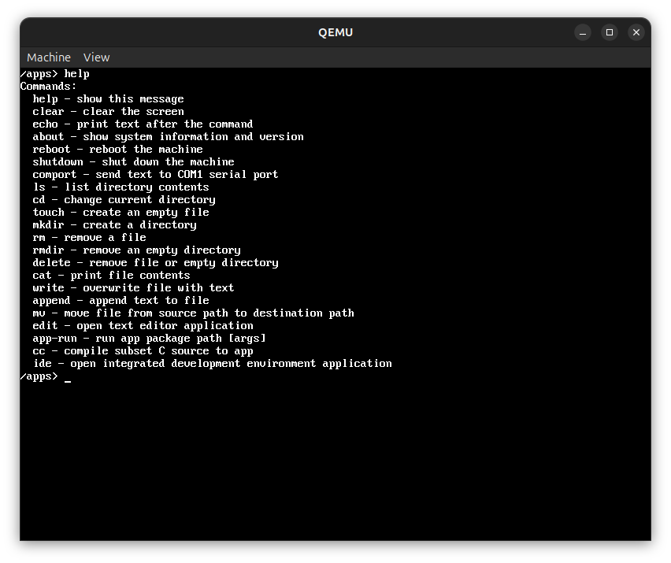

Hobby Operating System made by Georgi Georgiev and Alexander Buchkov
First alpha release of PrismOS is here! Main features include:

PrismCC is the in-OS subset C compiler that turns source files into BCVM bytecode packaged as Prism app images.
Open the compiler reference for the supported language features, built-ins, limits, and shell workflow.